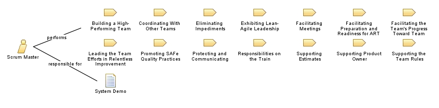

|
| Scrum Masters are servant leaders and coaches for an Agile Team. They help educate the team in Scrum, Extreme Programming (XP), Kanban, and SAFe, ensuring that the agreed Agile process is being followed. They also help remove impediments and foster an environment for high-performing team dynamics, continuous flow, and relentless improvement. |
| Role Sets: Agile Portfolio Operations, Agile Release Train (ART), Communities of Practice (CoP), Lean Agile Center of Excellence (LACE), Lean Governance , Roles |
|
Relationships
 |
| Primary Performs |
|
| Additionally Performs |
|
Main Description
| The Scrum Master role is a unique Agile team member who spends much of their time helping other team members communicate,
coordinate, and cooperate; generally, this person assists the team in meeting their delivery goals. |
Staffing
| Skills | Lean-Agile leadership, relentless improvement |
Key Considerations
| SAFe takes a pragmatic approach and assumes, in general, that the Scrum Master is a part-time role. During initial SAFe
adoption, however, the job may be more intensive. |
More Information
| Copyright © 2010-2017 Scaled Agile, Inc. Request permission to use text and graphics:
http://www.scaledagile.com/permissions-form/ |
|